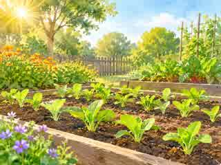
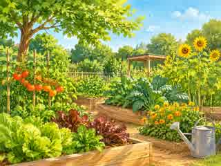
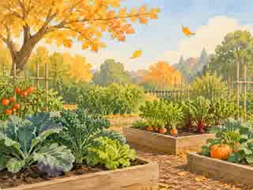
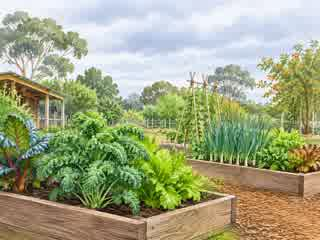

Gallery
These AI illustrations show a community garden in different seasons.
They are not photos of North Sydney Community Garden.




North Sydney Community Garden
These AI illustrations show a community garden in different seasons.
They are not photos of North Sydney Community Garden.



